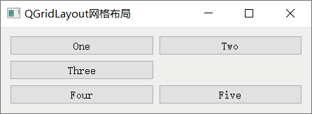
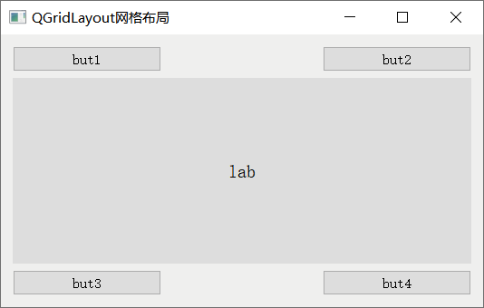

首页 > 编程笔记
Qt QGridLayout网格布局详解
QGridLayout 是 Qt 提供的一种网格布局工具（网格布局控件）。所谓网格布局，又称格栅布局或者表格布局，指的是 QGridLayout 可以将一些控件按照行和列排列在窗口上，例如：
借助行标和列标，我们可以在 QGridLayout 中唯一确定某个控件的位置。在 QGridLayout 中，控件的行标和列标都是从 0 开始的，例如图 1 中 one 按钮的位置为 (0, 0)，Four 按钮的位置为 (2, 0)。QGridLayout 中可以摆放多行多列的控件，各个控件可以随意摆放，必要时某些位置可以空着不用。
使用 QGridLayout 网格控件，程序中需引入
举个简单的例子：

图 1 QGridLayout网格布局
图 1 QGridLayout网格布局
借助行标和列标，我们可以在 QGridLayout 中唯一确定某个控件的位置。在 QGridLayout 中，控件的行标和列标都是从 0 开始的，例如图 1 中 one 按钮的位置为 (0, 0)，Four 按钮的位置为 (2, 0)。QGridLayout 中可以摆放多行多列的控件，各个控件可以随意摆放，必要时某些位置可以空着不用。
使用 QGridLayout 网格控件，程序中需引入
<QGridLayout>头文件。每个 QGridLayout 控件都是 QGridLayout 类的一个实例对象，该类提供了两个构造函数，分别是：
QGridLayout(QWidget *parent) QGridLayout()QGridLayout 类提供了很多实用的成员方法，常用的如下表所示：
| 成员方法 | 功 能 |
|---|---|
| int QGridLayout::rowCount() const | 获取网格控件中的行数。 |
| int QGridLayout::columnCount() const | 获取网格控件中的列数。 |
| void QGridLayout::addWidget(QWidget *widget, int row, int column, Qt::Alignment alignment = Qt::Alignment()) | 将 widget 控件添加到网格中的 (row,column) 位置处，并且可以自定义该控件的对齐方式。 |
| void QGridLayout::addWidget(QWidget *widget, int fromRow, int fromColumn, int rowSpan, int columnSpan, Qt::Alignment alignment = Qt::Alignment()) | 将 widget 控件从 (fromRow, fromColumn) 位置开始，跨 rowSpan 行和 ColumnSpan 列添加到网格中，并且可以自定义该控件的对齐方式。 |
| void QGridLayout::addLayout(QLayout *layout, int row, int column, Qt::Alignment alignment = Qt::Alignment()) | 向网格中的 (row, column) 位置处添加 layout 布局管理器。 |
| void QGridLayout::addLayout(QLayout *layout, int row, int column, int rowSpan, int columnSpan, Qt::Alignment alignment = Qt::Alignment()) | 将 layout 布局管理器从 (row, column) 位置开始，跨 rowSpan 行和 ColumnSpan 列添加到网格中，并且可以自定义该布局控件的对齐方式。 |
| void QGridLayout::setColumnStretch(int column, int stretch) | 给指定的 column 列设置伸缩系数。 |
| void QGridLayout::setRowStretch(int row, int stretch) | 给指定的 row 行设置伸缩系数。 |
| void QGridLayout::setColumnMinimumWidth(int column, int minSize) | 设置 column 列的最小宽度。 |
| void QGridLayout::setRowMinimumHeight(int row, int minSize) | 设置 row 行的最小宽度。 |
举个简单的例子：
#include <QApplication>
#include <QWidget>
#include <QLabel>
#include <QGridLayout>
#include <QPushButton>
int main(int argc, char *argv[])
{
QApplication a(argc, argv);
//创建主窗口
QWidget widget;
widget.setWindowTitle("QGridLayout网格布局");
//创建 4 个按钮和 1 个文本框
QPushButton *but1 = new QPushButton("but1");
QPushButton *but2 = new QPushButton("but2");
QLabel *lab3 = new QLabel("lab");
lab3->setStyleSheet("QLabel{background:#dddddd;font:20px;}");
lab3->setAlignment(Qt::AlignCenter);
QPushButton *but3 = new QPushButton("but3");
QPushButton *but4 = new QPushButton("but4");
//创建网格布局控件
QGridLayout *layout = new QGridLayout;
//向 layout 中添加控件，并指定各个控件的位置
layout->addWidget(but1, 0, 0);
layout->addWidget(but2, 0, 2);
layout->addWidget(lab3, 1, 0, 3, 3);
layout->addWidget(but3, 4, 0);
layout->addWidget(but4, 4, 2);
//将 layout 添加到 widget 窗口中
widget.setLayout(layout);
widget.show();
return a.exec();
}
程序运行结果为：

图 2 QGridLayout网格布局实例
图 2 QGridLayout网格布局实例
关注公众号「站长严长生」，在手机上阅读所有教程，随时随地都能学习。内含一款搜索神器，免费下载全网书籍和视频。

微信扫码关注公众号